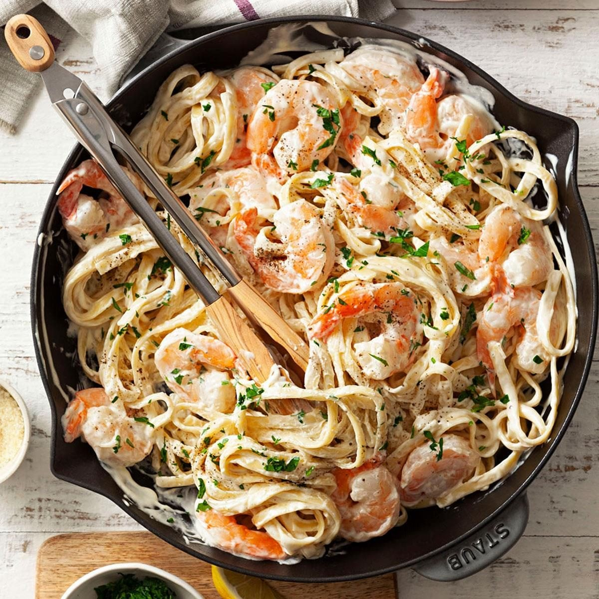

Home Page
Shrimp Fettucine Alfredo
Description
Shrimp Fettuccine Alfredo is a popular Italian-American pasta dish consisting of fettuccine noodles tossed in a rich, creamy sauce made from butter, heavy cream, and Parmesan cheese, topped with seasoned and seared shrimp.

Ingredients
- 1 pound Fettucine Pasta
- 1 Tablespoon Butter
- 1 Pound Cooked Shrimp, peeled and deveined
- 4 Cloves Garlic, minced
- 1 Cup half-and-half or Heavy Cream
- 6 tablespoons grated Parmesan Chees
- 1 Tablespoon chopped fresh parsley
- Salt to Taste
Steps
- Fill a large pot with lightly salted water and bring to a rolling boil. Cook fettuccine at a boil until tender yet firm to the bite, about 8 minutes. Drain.
- Heat butter in a large skillet over medium heat. Cook and stir shrimp and garlic in butter for 1 minute. Pour in half-and-half; stir. Add Parmesan cheese, 1 tablespoon at a time, stirring constantly. Mix in parsley; season with salt. Simmer, stirring frequently, until sauce is thickened.
- Stir fettuccine into sauce until evenly coated; serve hot.